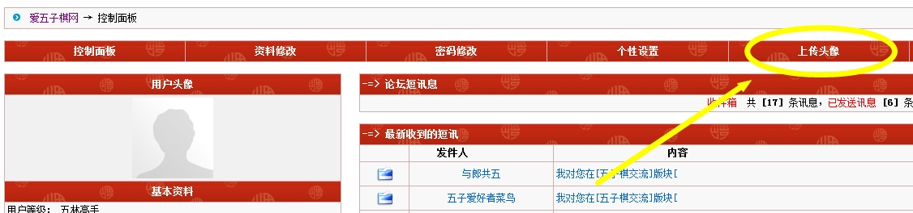
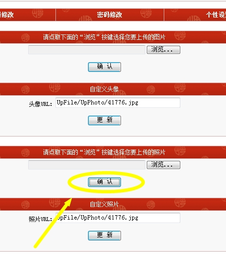
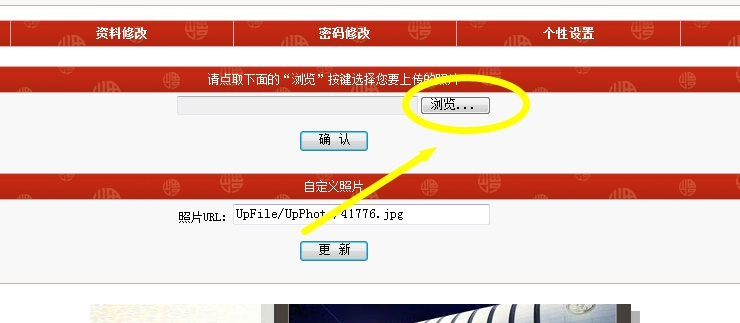
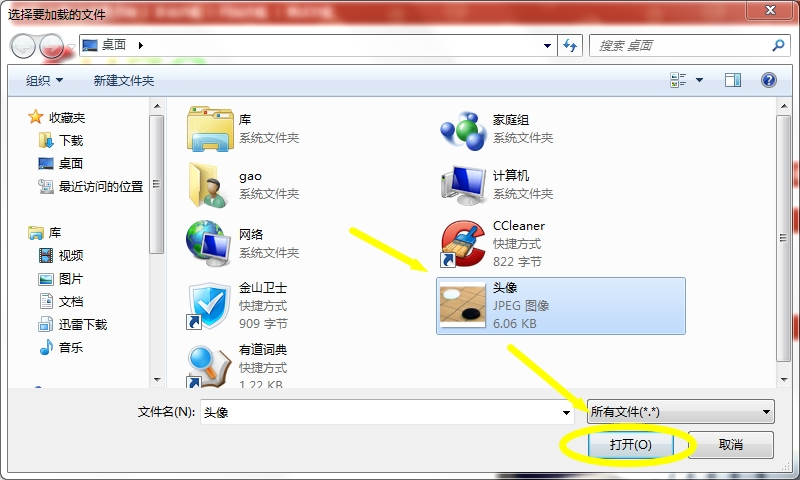
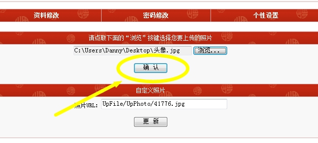
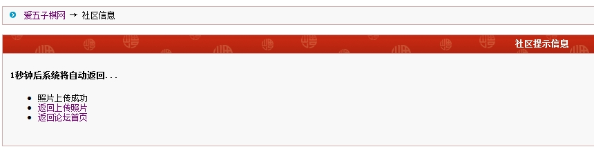
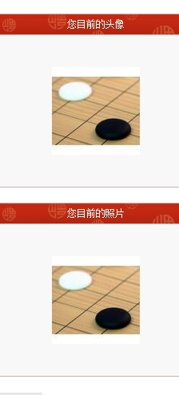

我发现自定义头像改不了诶……
首页
站务管理
#1 我发现自定义头像改不了诶…… 作者：雨过云舒 发表时间：2012-10-6 9:07:29
没法上传新头像，是还没修好么？
#2 Re:我发现自定义头像改不了诶…… 作者：屏蔽 发表时间：2012-12-10 23:08:13
顶。
#3 Re:我发现自定义头像改不了诶…… 作者：雨过云舒 发表时间：2012-12-11 15:15:58
顺便强烈建议论坛新增暴漫表情
#4 Re:屏蔽【==Re:我发现自定义头像改不了诶……==】 作者：雨过云舒 发表时间：2012-12-11 15:44:33
引用：
原文由 屏蔽 发表于 2012-12-10 23:08:13 :
顶。
其实是可以的，具体步骤步骤如下：
1.点击 网站功能->控制面板
2.在控制面板界面中点击 上传头像

3.点击第三行的 确认 按钮

4.点击 浏览 后选择将要上传的头像->打开->确认



5.过段时间查看控制面板就能看到新上传的头像了

［此帖子已被 雨过云舒 在 2012-12-11 15:47:46 编辑过］
#5 Re:我发现自定义头像改不了诶…… 作者：屏蔽 发表时间：2012-12-11 23:07:19
大锅你改的是不是自定义照片……
#6 Re:屏蔽【==Re:我发现自定义头像改不了诶……==】 作者：雨过云舒 发表时间：2012-12-12 8:38:20
引用：
原文由 屏蔽 发表于 2012-12-11 23:07:19 :
大锅你改的是不是自定义照片……
是啊
#7 Re:我发现自定义头像改不了诶…… 作者：屏蔽 发表时间：2012-12-12 10:35:32
我要改的是头像啊 不是我那张英俊神武的照片啊……
#8 Re:屏蔽【==Re:我发现自定义头像改不了诶……==】 作者：雨过云舒 发表时间：2012-12-12 15:07:25
引用：
原文由 屏蔽 发表于 2012-12-12 10:35:32 :
我要改的是头像啊 不是我那张英俊神武的照片啊……
呃……大概随便弄一下